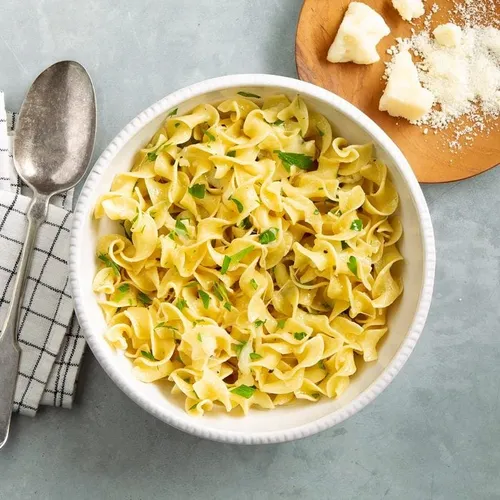

Buttered Noodles recipe

Discription
Buttered noodles are simple to make with your favorite pasta, butter, Parmesan cheese, salt, and pepper for a quick and easy, kid-friendly dish. Fresh herbs and a little lemon juice could be added to amp up the flavor. Perfect to serve either as-is or alongside steak, chicken, or meatballs. It's such a delicious recipe, yet I get many questions on how to make it.
Ingredients
- 1 (16 ounce) package fettoccine noodles
- 6 tablespoon butter, cut into piece
- 1/3 cup Parmesan cheese
- salt and ground black pepper to taste
Steps
- Gather all ingredients.
- Fill a large pot with lightly salted water and bring to rolling boil.
- Stir in fettoccine noodles, bring back to a boil, and cook pasta over medium heat until tender yet firm to the bite, 8 to 10 minutes
- Drain and return pasta to pot. Mix butter and parmesan cheese, salt, and pepper into pasta until evenly combined.
- Serve hot and enjoy!